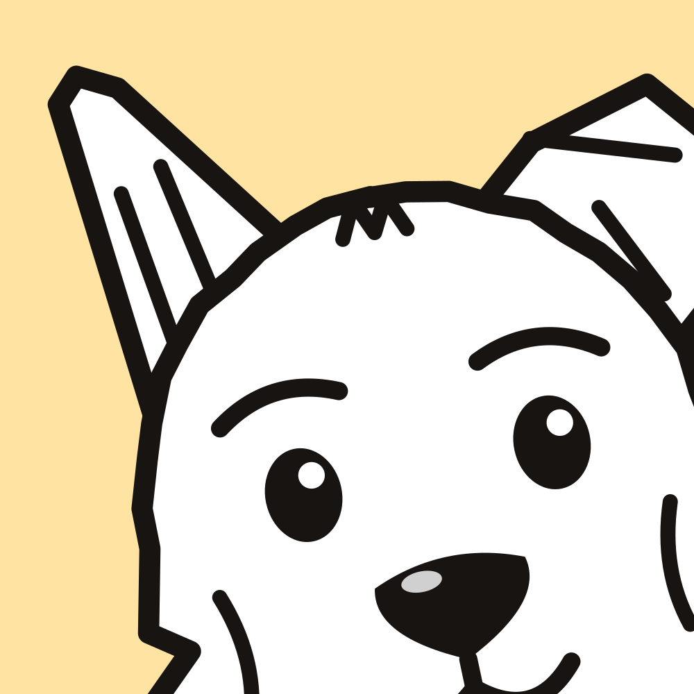
Uslu, köpeğine özel bir eğitim planı hazırlar. Yalnızca ödülle çalışan kısa derslerle her gün biraz ilerlersiniz, sağlık kayıtlarını da tek dokunuşla tutarsın.
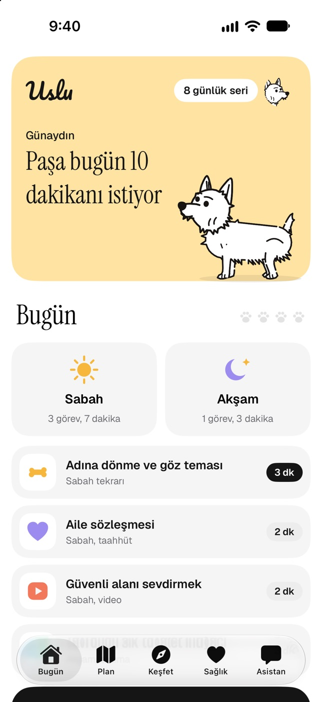
Uslu’yu köpeğiyle her gün biraz vakit geçirmek isteyen herkes için tasarladık. Uzun videolar ya da karmaşık programlar yok.
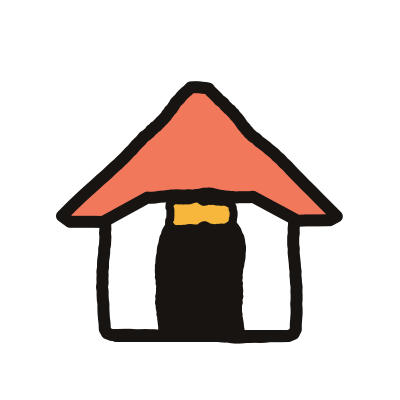
Yaşına, ırkına, yaşadığı eve ve zorlandığı konulara göre hazırlanır. Köpeğin büyüdükçe plan da onunla birlikte ilerler.
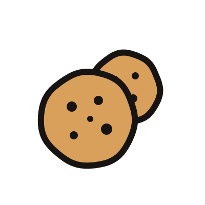
Her yöntem güncel davranış araştırmalarına ve veteriner hekim kaynaklarına dayanır. Bağırmak, korkutmak ya da sert tasmalar yok.
Her ders birkaç dakika sürer. Antrenman ekranı seni adım adım yönlendirir, eller serbest modda “Evet!” demen yeter.
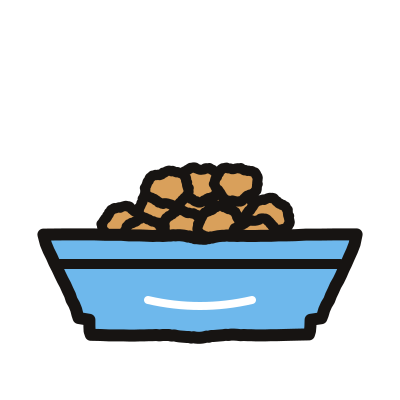
Tuvalet, mama, su, yürüyüş, kilo ve uyku kayıtları. Aşı ve bakım takvimi, veteriner hekimine götürebileceğin aylık rapor.
Asistan Uslu derslerine dayanarak yanıt verir ve kaynak dersi gösterir. Telefonunda çalışır, sorularını hiçbir yere göndermez.
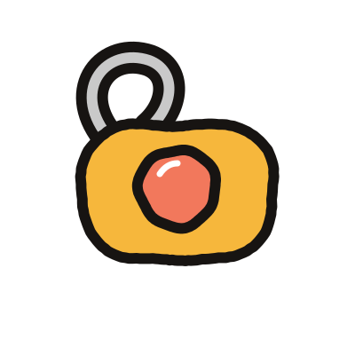
Uslu’ya özel clicker sesiyle doğru anı yakala. Kapı zili ya da havai fişek gibi seslere alıştırmak için ses kütüphanesi.
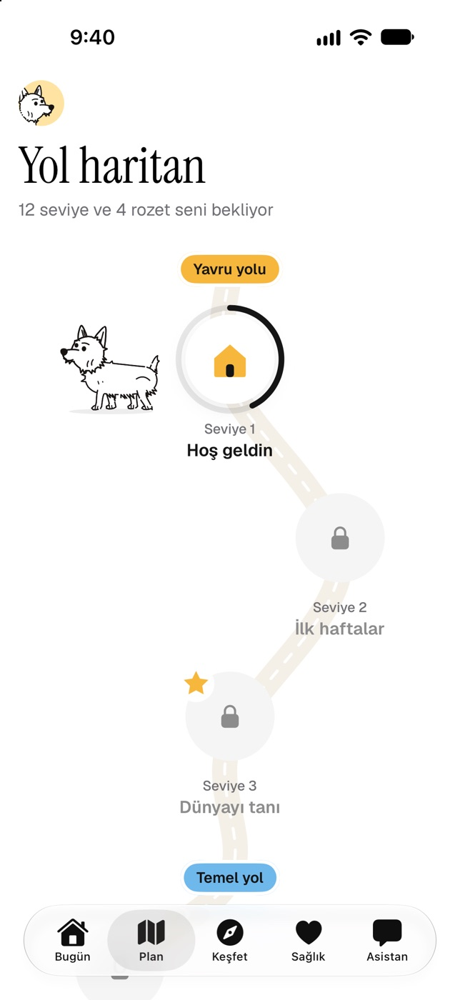
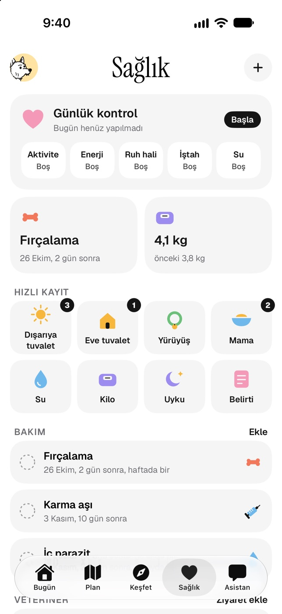
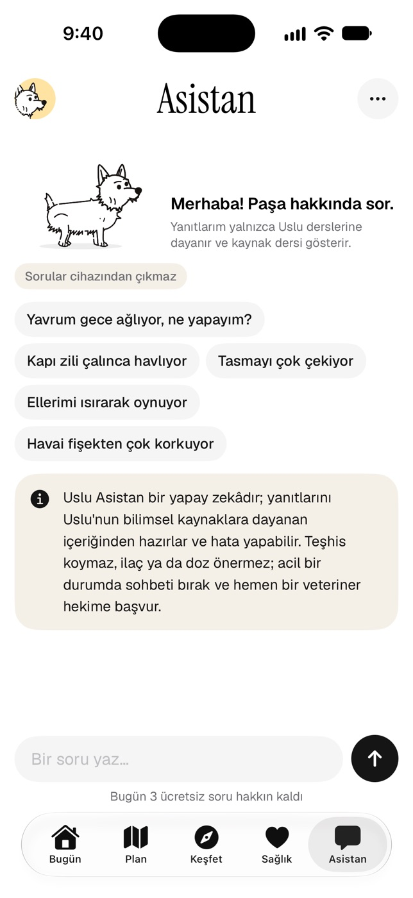
Doğru davranışı “Evet!” ile işaretleyip ödüllendirdiğinde köpeğin ne istediğini çabucak anlar. Ceza ise korku yaratır ve öğrenmeyi yavaşlatır.
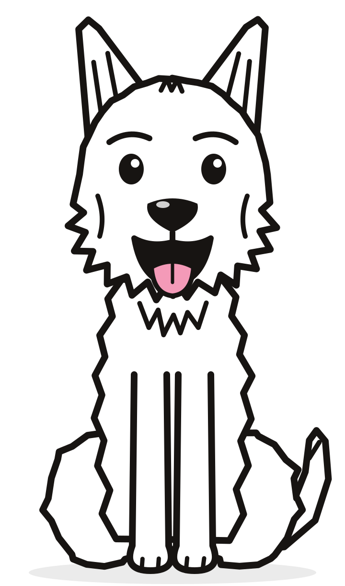
iPhone Duo’da telefonunu açtığında günün görevleri, beceriler ve bakım takvimi geniş ekrana yan yana yerleşir. Kapattığında kaldığın yerden devam edersin.
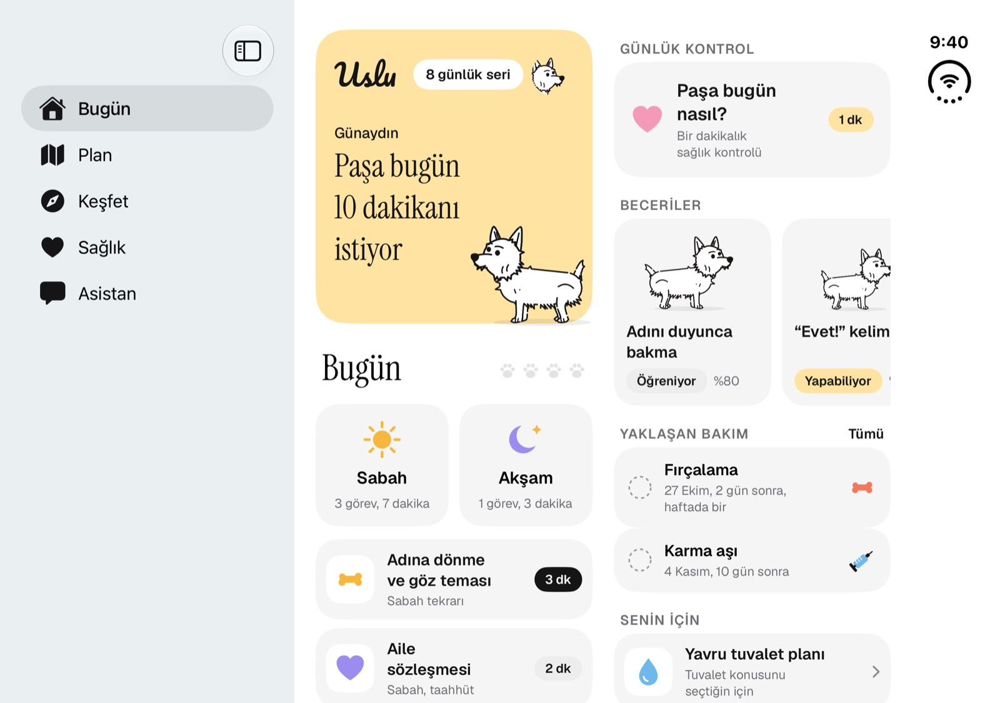
Evet, Uslu abonelikle çalışır. Kurulumda köpeğini tanıtırsın, Uslu ona özel planı hazırlar; planı başlatmak için aylık ya da 3 aylık Uslu Premium aboneliğini seçersin. Tüm seviyeler, dersler, sağlık kaydı ve asistan aboneliğe dahildir.
Yeni gelen yavrulardan yaşlı köpeklere kadar her yaş için yol var. Köpeğinin doğum tarihini girersin, plan yaşına göre kendiliğinden güncellenir.
Günlük süreyi sen seçersin: 5, 10, 15 ya da 20 dakika. Dersler bu süreye göre sabah ve akşama bölünür.
Hayır. Uslu eğitim ve günlük takip için bir yardımcıdır. Köpeğinde ani bir davranış değişikliği, ağrı ya da hastalık belirtisi görürsen veteriner hekimine danış.
Köpeğinin bilgileri, kayıtların ve fotoğrafın yalnızca telefonunda saklanır. Ayrıntılar gizlilik politikasında.
Uslu çıktığında ilk denemek isteyenlerden ol.